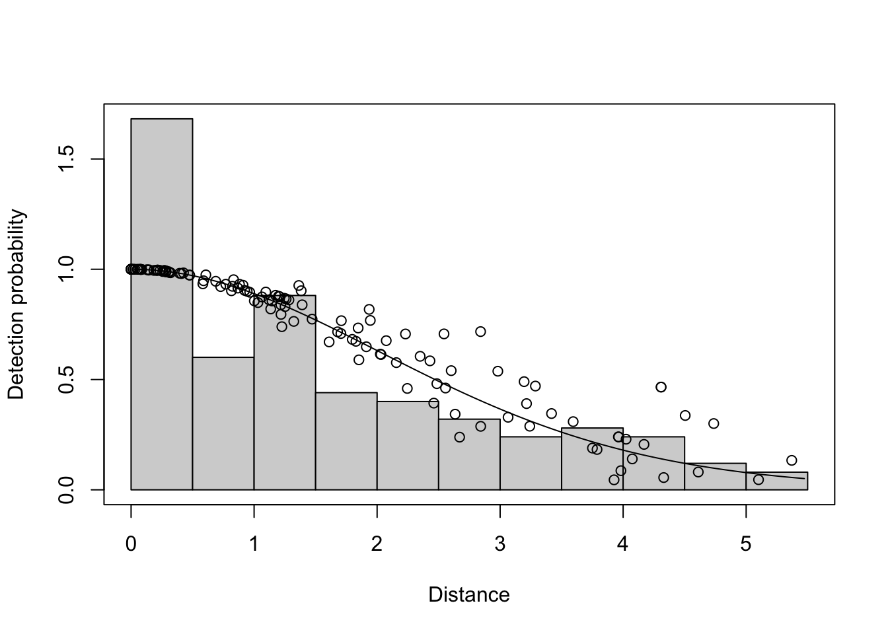

library(tidyverse)
library(Distance)
library(lubridate)
library(here)
library(swfscDAS)
library(MASS)
library(mvnfast)
library(sf)
library(picMaps)
localwd <- here("_R_code","task_2_est_g0_esw")
sp.code <- "033"Estimate g(0) and Effective Strip Width with Auxillary Data
A. Process Previous Survey DAS Data
Read in previous survey data
#read in input files
das_file <- file.path(localwd, "AllSurveys_g0_ESW_1986-2023.das")
y.proc <- swfscDAS::das_process(das_file)
strata_file_dir <- file.path(localwd, "Strata Files", "region_filter_esw_g0.csv")Process DAS file and filter for FKW regions
y.eff <- swfscDAS::das_effort(
y.proc, method = "equallength",
seg.km = 10,
dist.method = "greatcircle",
num.cores = 1,
strata_files = strata_file_dir)
y.eff.sight <- swfscDAS::das_effort_sight(y.eff, sp.codes = sp.code, sp.events = "S")
y.eff.sight.strata <- swfscDAS::das_intersects_strata(y.eff.sight, list(InPoly = strata_file_dir)) Export data for use in g(0) and ESW estimation
input_dat<-list()
input_dat$esw.dat <- y.eff.sight.strata$sightinfo %>%
filter(SpCode == sp.code, InPoly == 1, OnEffort == TRUE)
input_dat$g0.dat <- y.eff.sight.strata$segdata %>% filter(InPoly == 1, EffType == "S")
saveRDS(input_dat, file.path(localwd, "output","esw_g0_input.rds"))B. Estimate ESW and g(0) Relative to Beaufort Sea State
If you are not continuing from step A in the same session, the following code must be executed to load the appropriate packages and processed data from setp A. Otherwise, this code chunk can be skipped.
#' load packages
library(tidyverse)
library(Distance)
library(lubridate)
library(here)
library(mvnfast)
library(picMaps)
library(future)
library(doFuture)
localwd <- here("_R_code","task_2_est_g0_esw")
sp.code <- "033"
#' Recall saved data from step 1
input_dat <- readRDS(file.path(localwd, "output","esw_g0_input.rds"))Estimate Effective Strip Width (ESW) relative to Beaufort sea state
df <- data.frame(distance = input_dat$esw.dat$PerpDistKm, beaufort = input_dat$esw.dat$Bft)
df <- df[complete.cases(df),]
detfun <- ds(df, formula = ~beaufort, truncation = 5.5, key="hn") Model contains covariate term(s): no adjustment terms will be included.Fitting half-normal key functionAIC= 382.087No survey area information supplied, only estimating detection function.summary(detfun)
Summary for distance analysis
Number of observations : 132
Distance range : 0 - 5.5
Model : Half-normal key function
AIC : 382.087
Optimisation: mrds (nlminb)
Detection function parameters
Scale coefficient(s):
estimate se
(Intercept) 1.2486795 0.22333973
beaufort -0.1320774 0.05168352
Estimate SE CV
Average p 0.4805914 0.02942133 0.06121901
N in covered region 274.6616170 24.21359682 0.08815792plot(detfun, showpoints = TRUE)
Estimate ESW for all segments
modeling_data <- readRDS(file.path(here(), "_R_code", "task_1_segment_das_data", "output","seg_sight_out.rds"))
modeling_data$segdata <- modeling_data$segdata %>% rename(beaufort = avgBft)
modeling_data$segdata[paste0("esw","_",sp.code)] <- predict(detfun, modeling_data$segdata, esw=TRUE)[["fitted"]]Estimate g(0) relative to Beaufort sea state
g0_dat <- input_dat$g0.dat
g0_dat$resp <- as.logical(g0_dat[,paste0("nSI_",sp.code)])
g0_dat <- g0_dat%>%dplyr::select(resp, mlat, mlon, avgBft, year,dist) %>%
rename(beaufort = avgBft)
g0_dat <- g0_dat[complete.cases(g0_dat), ]
g0_dat$esa <- predict(detfun, newdata = g0_dat, esw=TRUE)[["fitted"]] * 2 * g0_dat$dist
g0_dat <- filter(g0_dat, esa>0)
#' Combine beaufort=0,1 as the same g(0) = 1
g0_est<-scam::scam(formula = resp ~ s(I(pmax(beaufort-1,0)), bs='mpd', k=4)
+ s(mlat, mlon, bs='tp') + s(year, k=4),
offset = log(esa+0.0001),
family=poisson,
data=g0_dat,
not.exp=TRUE,
gamma=1.4)Estimate relative g(0) for each Beaufort sea state
newdata_g0 <- data.frame(beaufort = 0:7,
mlat = mean(modeling_data$segdata$mlat, na.rm=TRUE),
mlon = mean(modeling_data$segdata$mlon, na.rm=TRUE),
year = round(mean(modeling_data$segdata$year, na.rm=TRUE)))
ps <- scam::predict.scam(g0_est, newdata = newdata_g0, type="response")
Rg0 <- ps/ps[1]
names(Rg0) <- 0:7
round(Rg0,2) # for display only 0 1 2 3 4 5 6 7
1.00 1.00 0.70 0.49 0.34 0.23 0.16 0.11 Add g(0) estimate to all segments and save final modeling data set
Linear interpolation when Beaufort sea state changed during the segment.
BFlow <- floor(modeling_data$segdata$beaufort + 1)
BFhigh <- ceiling(modeling_data$segdata$beaufort + 1)
w <- BFhigh - (modeling_data$segdata$beaufort + 1)
modeling_data$segdata[,paste0("g0_w_",sp.code)] <- w
modeling_data$segdata[,paste0("g0","_",sp.code)] <- w*Rg0[BFlow] + (1-w)*Rg0[BFhigh]
saveRDS(modeling_data, file.path(localwd, "output","seg_sight_out_g0_ESW.rds"))C. Monte Carlo Estimation of ESW and g(0) Parameter Covariance Matrix
# Design matrix for g(0) estimates
Lp <- scam::predict.scam(g0_est, newdata = newdata_g0, type="lpmatrix")
# Subset for columns affecting g(0):
bft_idx <- grep("beaufort", colnames(Lp))
Lp <- Lp[,bft_idx]
# Draw detection parameter sample:
detfun_g0 <- detfun
v_theta <- solve(detfun_g0$ddf$hessian)
pars.esw <- detfun_g0$ddf$parnpar <- 10
samps <- 500 # total samples = npar * samps
plan("multisession", workers=npar)
set.seed(8675309)
g0_par_sim <- foreach(i = 1:npar, .options.future = list(seed = TRUE), .errorhandling = "pass") %dofuture% {
theta_star <- matrix(NA, samps, length(detfun$ddf$par))
v_alpha_star <- matrix(NA, samps, length(bft_idx)^2)
alpha_star <- matrix(NA, samps, length(bft_idx))
Rg0_star <- matrix(NA, samps, 8)
# Constructing variance-covariance matrix
for(j in 1:samps){
g0_star_out <- sim_esw_g0(pars.esw, v_theta, detfun, g0_dat)
g0_star <- g0_star_out$g0_star
theta_star[j,] <- g0_star_out$theta_star
v_alpha_star[j,] <- as.vector(g0_star$Vp.t[bft_idx, bft_idx])
alpha_star[j,] <- g0_star$coefficients.t[bft_idx]
Rg0_star[j,] <- g0_star_out$Rg0
}
list(theta_star=theta_star, alpha_star=alpha_star, v_alpha_star=v_alpha_star, Rg0_star=Rg0_star)
}
plan("sequential")theta_star <- lapply(g0_par_sim, \(x) x$theta_star) %>% do.call(rbind,.)
alpha_star <- lapply(g0_par_sim, \(x) x$alpha_star) %>% do.call(rbind,.)
v_alpha_star <- lapply(g0_par_sim, \(x) x$v_alpha_star) %>% do.call(rbind,.)
Rg0_star <- lapply(g0_par_sim, \(x) x$Rg0_star) %>% do.call(rbind,.)
## Compose full variance/covariance from law of total variance
v_alpha <- colMeans(v_alpha_star) %>% matrix(.,sqrt(length(.))) +
var(alpha_star)
c_alpha_theta <- cov(alpha_star, theta_star)
V <- rbind(
cbind(v_alpha, c_alpha_theta),
cbind(t(c_alpha_theta), var(theta_star))
)
varprop_list <- list(
newdata_g0 = newdata_g0,
Lp_g0 = Lp,
V_par = V,
par_sim = cbind(alpha_star, theta_star),
Rg0_sim = Rg0_star,
detfun = detfun,
g0_dat = g0_dat,
g0_est = g0_est,
bft_idx = bft_idx
)
saveRDS(varprop_list, file = file.path(datadir, "output","varprop_list.rds"))